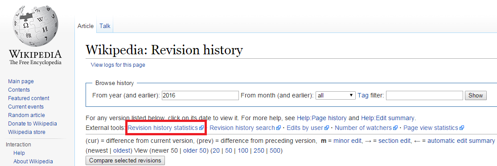

Use the Wikipedia Tool Labs to display statistics about a wikipedia page over time, including contributors
On any Wikipedia page's history tab is a link to external resources.
This page takes you directly there, and links you to the Top Editors section.

Highlighted link to the XTools resource
This page is not affiliated with Wikipedia, the Wikimedia Foundation, or Wikipedia Tools